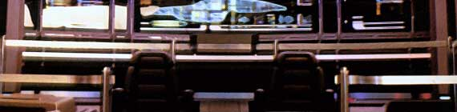
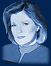
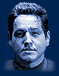
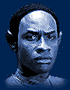
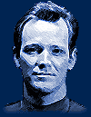
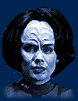
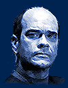

|









|
Uma
Breve História de Voyager Quando
Voyager foi idealizada, os criadores sabiam que estavam assumindo grandes
riscos. Em termos de histórias, poderiam comear a parecer repetitivos e o estúdio
j sentia a necessidade de uma inovao na franquia. Ao mesmo tempo, levar a Federao
onde nenhoutra série esteve - o outro lado da galáxia, cerca de 70.000 anos-luz
da Terra - era o mesmo que criar um novo universo, novos adversrios e novos alienígenas.
"Isso significa fazer algumas coisas muito assustadoras", disse Jeri Taylor, co-criadora
da série, "por exemplo cortar os laos com muitas coisas que são familiares e
confortveis para ns e a audiência". Talvez o maior desafio fosse inventar esse universo, modelar o desconhecido e distante Quadrante Delta. "No há mais Frota Estelar. No há mais almirantes para nos dar ordens, para nos dar permissão para fazer algo. No há mais Klingons, Ferengis ou Romulanos", completou Taylor. Todos esses elementos aos quais o pblico tinha se habituado ao longo dos trinta anos de Jornada no estariam mais disposio dos roteiristas. Mas comear tudo do zero para trazer novas histórias pareceu valer a pena. Durante os meses de encontros e sessões para desenvolver a série, Jeri Taylor, Rick Berman e Michael Piller trabalharam arduamente para arquitetar algo inteiramente único e indito para os trekkers, ao mesmo tempo mantendo os elementos de Jornada que tornaram a criao de Gene Roddenberry um fenmeno contnuo. A co-criadora fala com toda a seriedade que Roddenberry estava presente quando a nova saga ganhou vida. Voyager apresenta o maior elenco de personagens fixos de todos os seriados. Criar cada um deles, tornando-os diferentes do que os fs j tinham visto, no foi tarefa fácil. O processo foi apressado e levou alguns meses; a atenção do estúdio estava dividida entre o fecho de A Nova Geração na TV, a estreia de "Generations" no cinema e a luta de Deep Space Nine para encontrar seu caminho. O trio de criadores decidiu então ir de verdade aonde nenhuma Jornada tinha ido, introduzindo a primeira mulher fixa na cadeira de comando de uma nave. "Essa foi uma deciso que tomamos porque sentimos que precisvamos de uma nova abordagem na capitania", contou Taylor. "Se tivssemos escolhido um homem, em que ele seria diferente dos homens que j tinham servido corajosamente? Como algum se igualaria a Patrick Stewart [Picard, de A Nova Geração]? Tivemos capites brancos. Tivemos um capitão negro em Deep Space Nine. Pareceu que era a hora certa de dar esse passo e colocar uma capitã. A produção estava certa de que ninguém questionaria o comando de Janeway por ela ser mulher. Ao contrário de Picard, que nunca passava o tempo com sua tripulao, ela se envolveria na vida de seus oficiais. S que as novidades no pararam por a. Tuvok, o chefe de segurana da USS Voyager era um Vulcano negro, algo nunca visto nas séries anteriores. O médico-chefe, um holograma de emergência confinado enfermaria e aos holodecks. O primeiro-oficial e engenheira-chefe, ex-rebeldes Maquis. O processo de escalao consumiu muito tempo e foi cansativo. A produção entrevistou centenas de atores, alguns diversas vezes. Mas, de todos os papis, foi o de Janeway, sempre vislumbrada como uma mulher, que rendeu mais comentários em Hollywood. Correram rumores de que a atriz canadense Genevive Bujold, indicada ao Oscar de melhor atriz por sua atuao em "Anne of the Thousand Days" (1969) estava interessada no papel, embora tivesse se recusado a se submeter ao teste. Baseando-se apenas no trabalho premiado da atriz, os produtores a escolheram como a capitã Janeway. S que, aps o incio das filmagens, Bujold voltou atrs em sua deciso, admitindo que tinha cometido um erro e que no conseguia trabalhar sob as condies estabelecidas. O caminho foi então aberto para Kate Mulgrew. Complicaes com o elenco parte, Voyager foi problemtica do primeiro ao último episódio, por uma muitas outras razes. Ao contrário das séries anteriores, no seria transmitida em "syndication", mas lançada exclusivamente na nova rede de TV da Paramount, um canal ainda sem pblico e que no cobria todo o pas. O primeiro ano contou com apenas 16 episódios, por causa da época em que o seriado estreou (no meio da temporada televisiva norte-americana). O segundo e terceiro anos viram uma perda rpida da audiência, j fragilizada pela segmentao do mercado da TV. Isso levou, ao final do ano 3, a uma total mudança nas diretrizes da produção. Talvez a mais significativa delas tenha sido a notcia de que Jennifer Lien (Kes) no voltaria para a temporada seguinte, sendo "substituda" pela atriz Jeri Ryan. A entrada de Ryan como a sensual Seven of Nine definiu um novo padro para os episódios. Voyager cada vez menos se preocuparia em enfocar os personagens ou criar arcos de histórias; cada vez mais se assemelharia a uma série de ação, visualmente atrativa. Os roteiristas claramente passaram a sustent-la no trio Seven, Janeway e Doutor, para desespero de alguns fs e agrado de outros -- um dos principais motivos por que o seriado o mais controverso da franquia. No fim, pode-se dizer que, com suas 7 temporadas e 172 episódios, Voyager acaba sendo nica no por sua nova premissa ou pelos personagens, mas por diferenciar-se em seu mago das outras encarnações de Jornada nas Estrelas. Elenco: |